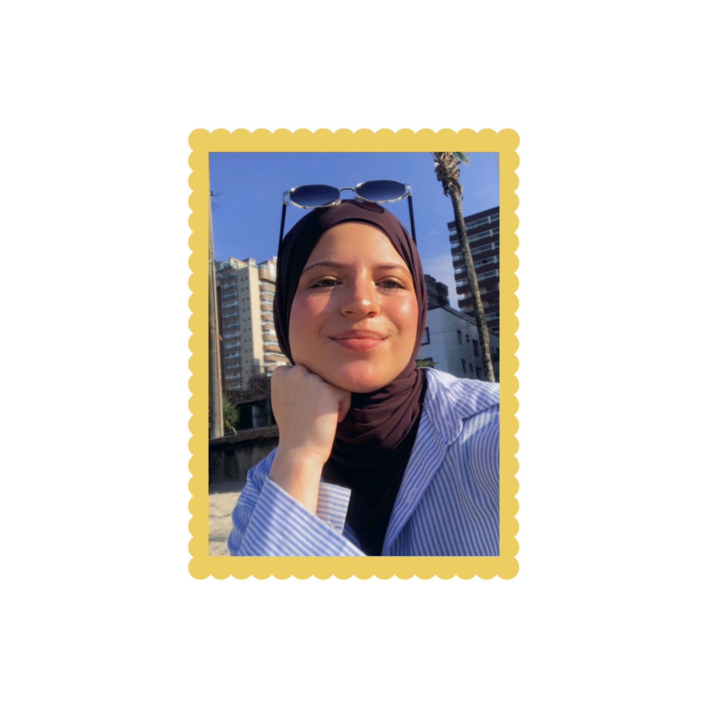
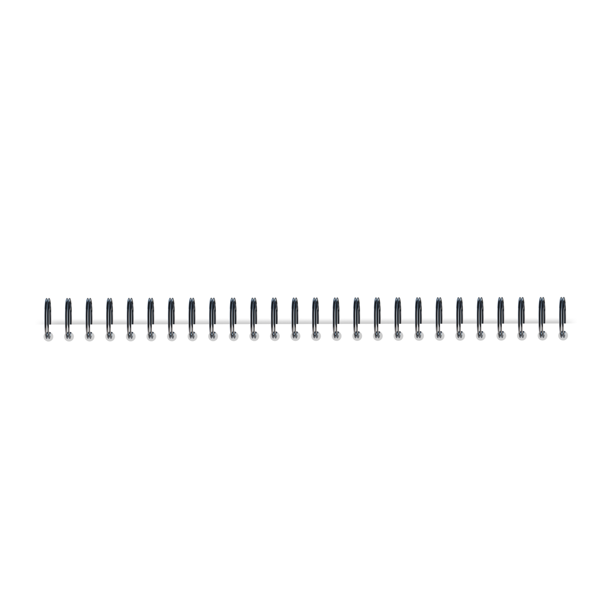

Meu nome é Amira Jamal Bazerbachi, tenho 16 anos e estou cursando o segundo ano do ensino médio. Faço curso técnico de Desenvolvimento de Sistemas no SENAI Morvan Figueiredo, onde estou no primeiro ano de aprendizado. A princípio, meu principal objetivo de vida é trabalhar no mundo da moda, mas, desde que entrei no mundo da tecnologia, percebi que seria incrível expandir minhas perspectivas nessa área. Como estudante, busco sempre adquirir novos conhecimentos e concluir minha formação com louvor.
Como profissional, sinceramente ainda estou descobrindo meu caminho. Penso, é claro, em transformar o que venho aprendendo em uma fonte de renda e adoraria ter experiências práticas na criação de sites e design, estando totalmente disposta a usar minhas competências para desenvolver projetos remunerados. Atualmente, já desenvolvi capacidades para estruturar páginas web com HTML e CSS. Tenho também habilidade em UX/UI, onde misturo criatividade e estratégia para tirar ideias do papel.
Durante as aulas, trabalhamos constantemente em grupo, o que vem me auxiliando a aprimorar o trabalho em equipe e a comunicação. Além disso, as apresentações frequentes que realizamos desenvolvem cada vez mais a minha comunicação. O que mais me interessa hoje é o design. Desde o início do curso, desenvolvi meu olhar estético e venho ganhando experiência na área, gosto de designs criativos e coloridos que tenham a minha cara, mas também amo explorar estéticas diferentes. Tenho grande interesse em buscar especializações focadas em design para elevar ainda mais o meu nível. E isso é um pouco do que posso falar sobre mim, em breve venho com mais atualizações, xoxo.


Nome: Amira Jamal Bazerbachi
Idade: 16 anos
Aniversario: 18 de setembro de 2009
Escola: SENAI Morvan Figueiredo
Hobbies: Pintar, Ceramica, Croche, Ler
Habilidades: HTML, CSS, Git e GitHub, UX/UI, figma, comunicação e trabalho em equipe
Sonhos: Trabalhar com moda e conhecer o mundo